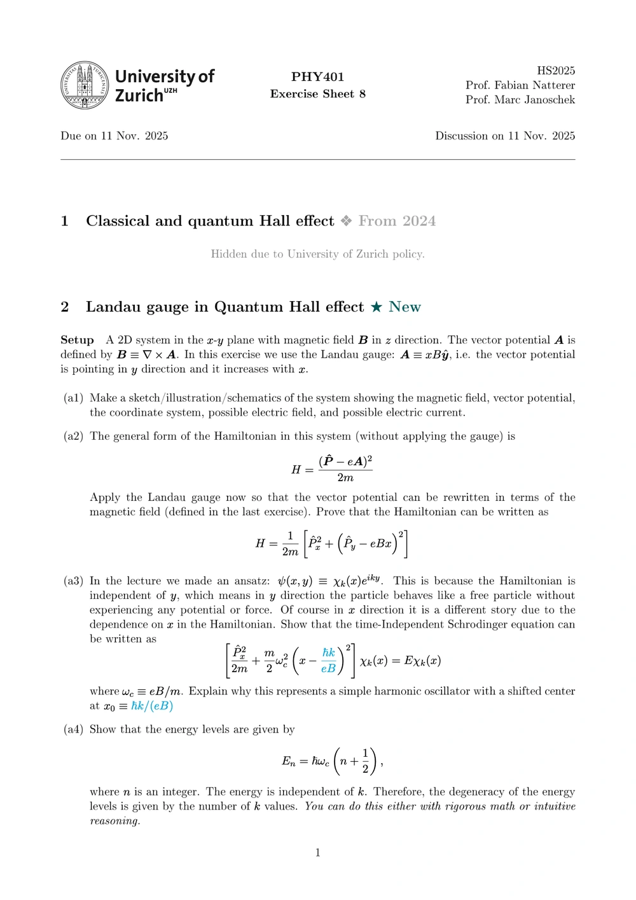

Course & tutorial materials
Exercises · Teaching notes
Eleven exercise sheets with commentary on how the problems were designed and discussed. Sheet 8 connects a mathematical derivation to questions about electron motion in a magnetic field.